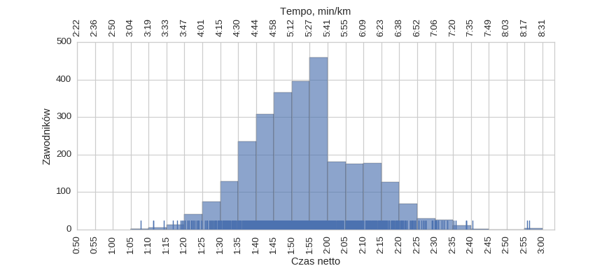
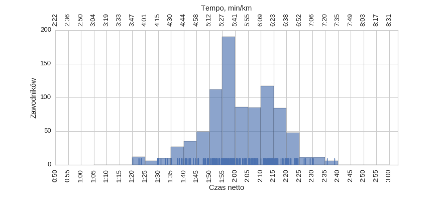
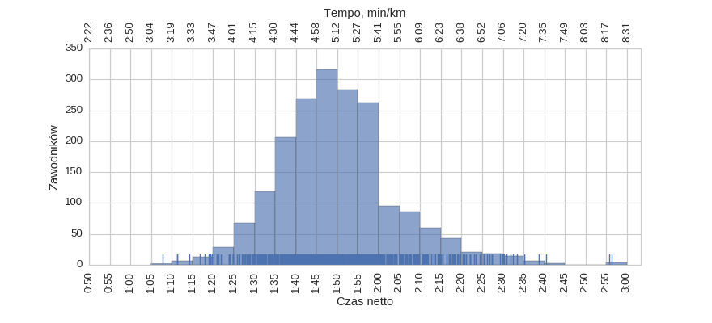
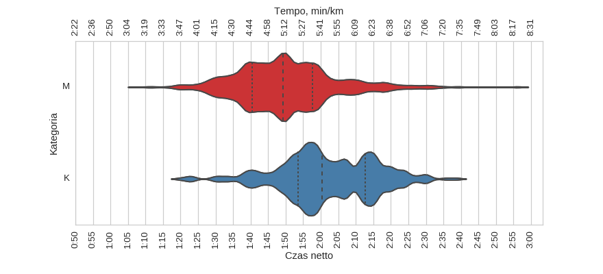
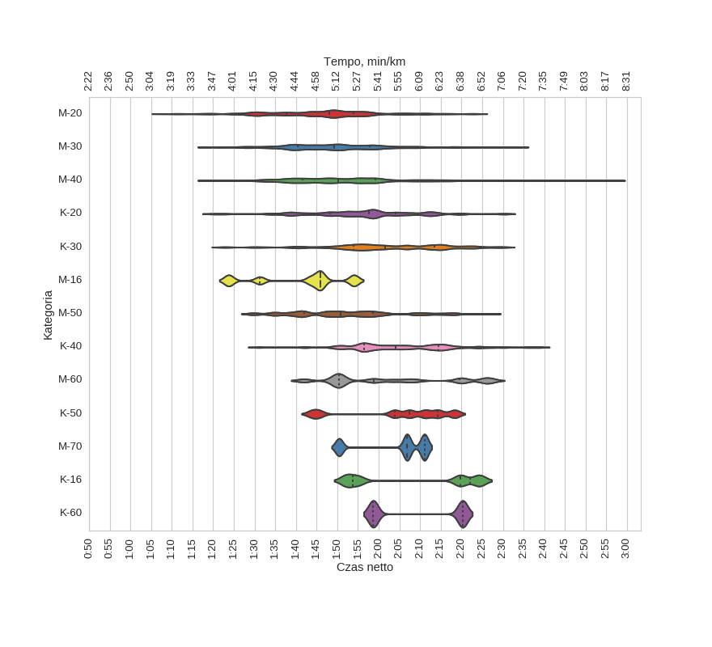

II Półmaraton Gliwicki (2015-10-18)
Histogramy
Klasyfikacja generalna

| mean | std | min | 25% | 50% | 75% | max | |
|---|---|---|---|---|---|---|---|
| czas | 1:53:50 | 0:15:05 | 1:07:51 | 1:43:19 | 1:52:53 | 2:02:02 | 2:56:19 |
kobiety

| mean | std | min | 25% | 50% | 75% | max | |
|---|---|---|---|---|---|---|---|
| czas | 2:01:49 | 0:13:42 | 1:20:04 | 1:53:33 | 2:00:21 | 2:12:38 | 2:38:42 |
mężczyźni

| mean | std | min | 25% | 50% | 75% | max | |
|---|---|---|---|---|---|---|---|
| czas | 1:50:08 | 0:14:16 | 1:07:51 | 1:40:30 | 1:49:19 | 1:57:35 | 2:56:19 |
Wykresy rybkowe
wg płci

| czas | count | |||||||
|---|---|---|---|---|---|---|---|---|
| mean | std | min | 25% | 50% | 75% | max | ||
| plec | ||||||||
| K | 2:01:49 | 0:13:42 | 1:20:04 | 1:53:33 | 2:00:21 | 2:12:38 | 2:38:42 | 892 |
| M | 1:50:08 | 0:14:16 | 1:07:51 | 1:40:30 | 1:49:19 | 1:57:35 | 2:56:19 | 1929 |
wg kategorii

| czas | count | |||||||
|---|---|---|---|---|---|---|---|---|
| mean | std | min | 25% | 50% | 75% | max | ||
| kat | ||||||||
| K-16 | 2:08:41 | 0:14:52 | 1:52:15 | 1:53:40 | 2:19:44 | 2:22:01 | 2:24:17 | 15 |
| K-20 | 1:56:12 | 0:13:14 | 1:20:04 | 1:48:18 | 1:57:37 | 2:04:04 | 2:30:15 | 218 |
| K-30 | 2:02:26 | 0:13:38 | 1:22:25 | 1:53:50 | 2:01:36 | 2:13:30 | 2:30:01 | 421 |
| K-40 | 2:05:26 | 0:12:34 | 1:30:59 | 1:56:28 | 2:04:07 | 2:14:31 | 2:38:42 | 203 |
| K-50 | 2:04:57 | 0:12:11 | 1:43:50 | 2:03:51 | 2:07:27 | 2:14:19 | 2:18:21 | 26 |
| K-60 | 2:09:29 | 0:11:32 | 1:58:41 | 1:58:41 | 2:09:29 | 2:20:17 | 2:20:17 | 9 |
| M-16 | 1:40:50 | 0:11:05 | 1:23:45 | 1:31:16 | 1:45:49 | 1:45:56 | 1:54:01 | 15 |
| M-20 | 1:46:20 | 0:13:21 | 1:07:51 | 1:37:41 | 1:48:09 | 1:54:00 | 2:23:28 | 454 |
| M-30 | 1:49:54 | 0:13:17 | 1:18:55 | 1:40:25 | 1:49:09 | 1:57:54 | 2:33:27 | 786 |
| M-40 | 1:52:33 | 0:15:31 | 1:19:24 | 1:41:39 | 1:50:13 | 1:59:16 | 2:56:19 | 514 |
| M-50 | 1:52:15 | 0:13:14 | 1:29:27 | 1:42:02 | 1:50:52 | 1:58:34 | 2:26:44 | 112 |
| M-60 | 2:02:37 | 0:15:08 | 1:41:53 | 1:50:20 | 1:58:48 | 2:19:34 | 2:27:18 | 38 |
| M-70 | 2:04:19 | 0:08:47 | 1:50:25 | 2:02:44 | 2:06:51 | 2:11:02 | 2:11:02 | 8 |
Menu
HistogramyWykresy rybkowe
∙ wg płci
∙ wg kategorii
Dystans: 21.0975 km
Liczba uczestników: 2836
Wygenerowano: 2016-03-29 20:44:58.889823